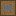

Assembly Bench・ブロック・Survival
①子ども 部品をならべて機械を組み立てる机。どの部品が何の役目かがわかる。
②学生 左の < > で作る物を選び、役目ごとのスロットに部品を入れて「組立」。ラジオと高周波発振器はここで作る。
③大人 工場では製品ごとに「部品表（BOM：Bill of Materials）」を作り、どの部品をいくつ使うかを1枚にまとめる。注文・在庫・修理もこの表で決まる。
④ガチ 1955年のソニー TR-55 はトランジスタ5個のラジオ。部品を基板にさしてから、はんだの池にくぐらせて一度に付ける「フローはんだ付け」が、同じころに広まった。
（このアイテムを使うレシピは無い）